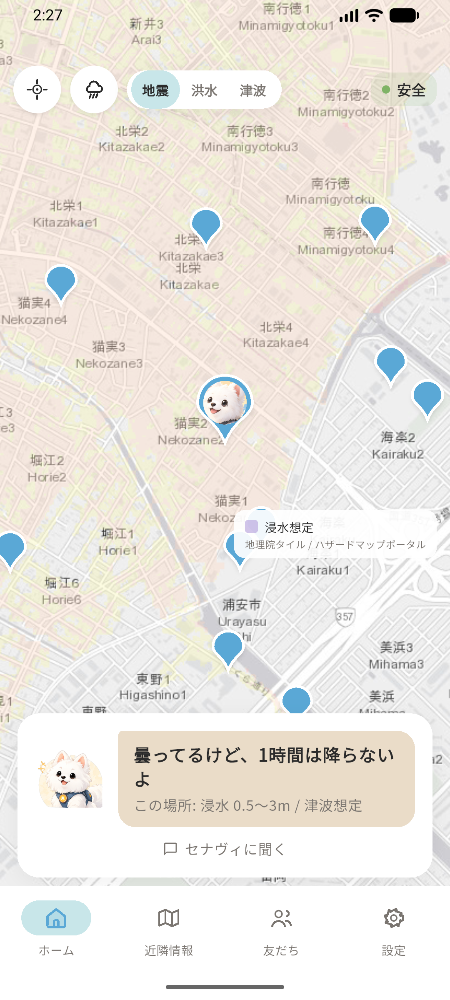
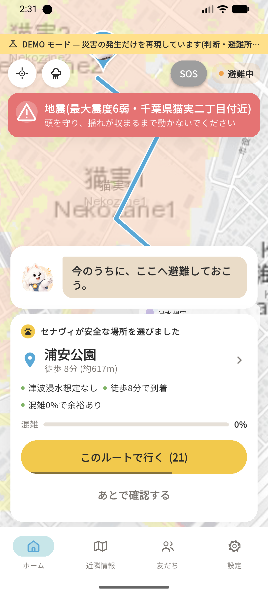
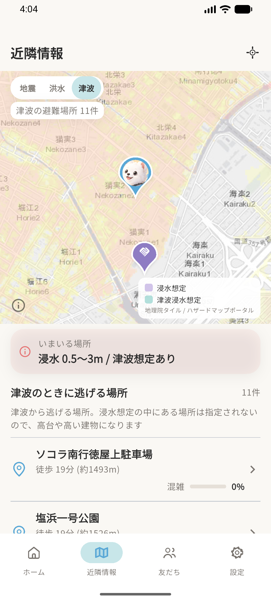
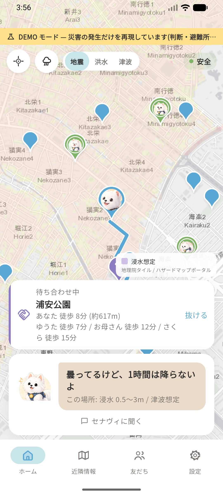
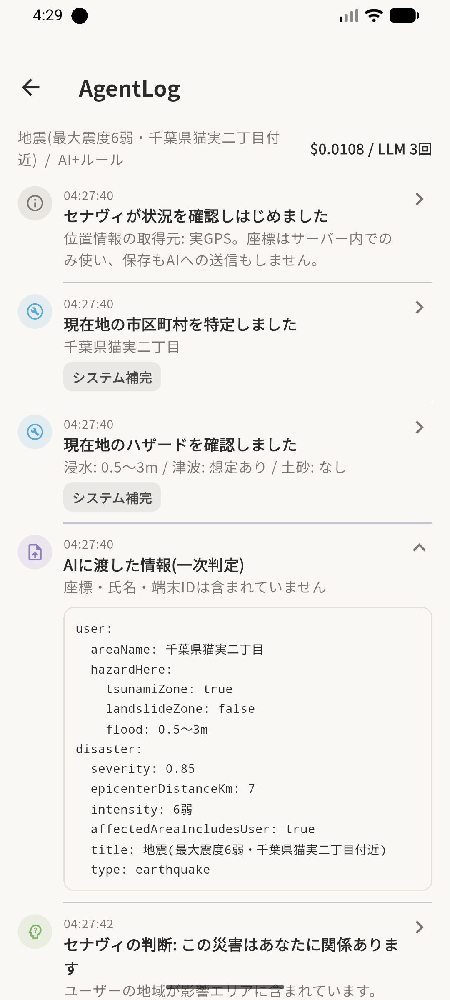
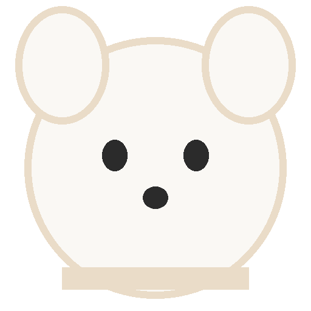

セナヴィ- SENAvi -
Safety Navigator AI
Safety Navigator AI
大切な人と、帰るための道を。
災害時に、あなたの代わりに判断し、安全な避難経路を導いてくれるAIナビゲーターです。ふだんは雨雲レーダーと位置共有のアプリとして使えます。
 AI HACK 2026 応募作品
AI HACK 2026 応募作品1ホーム（ふだん）
雨雲レーダーと周辺の避難場所。セナヴィが空模様をひとこと言います。

2災害の日
避難先と理由を3点。押さなくても、30秒で案内が始まります。

3近隣情報
災害の種別で避難場所が変わります。津波なら高台や高い建物だけに。

4合流
落ち合う場所を決めると全員の地図に同じ旗。各自の徒歩分が並びます。

5判断の記録
AIに渡した入力・モデル名・コストが全部残ります。座標はありません。

6友だち（見守り）
確認中→避難中→到着を自動で送ります。位置は許可した相手にだけ。

セナヴィの表情
 通常
通常 にっこり
にっこり 驚き
驚き 真剣
真剣 走る
走る 困った
困った
状況に応じて使い分けます。
通常にっこり驚き真剣走る困った
伏せる振り向く
安否の状態
家族・友人に自動で届きます。
安全
確認中
避難中
到着
不明
ふだんの仕組みが、災害の日に効く
| ふだん | 災害の日 |
| セナヴィに天気を聞く | 避難先を判断する |
| 友だちと待ち合わせる | 避難先で合流する |
| 帰宅を家族に知らせる | 避難所への到着を知らせる |
くわしくは
 GitHub
GitHub Qiita 記事
Qiita 記事
GitHubQiita 記事本アプリは試作です。避難の判断は自治体の避難指示を優先してください。